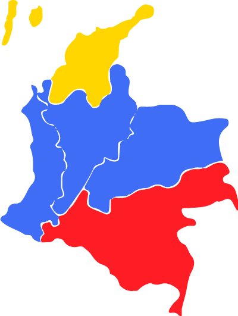

{kind=link}
primera plana
El Termómetro
¿Cree usted que el fiscal Nestro H. Martínez debe apartarse del caso de Odebrecht?
#RobledoCandidatoPolo... ¡Nuevo!
voluntarios
Llego la hora de transformar a Colombia. Vínculese a este gran cambio

videoteca
Robledo y Peláez, Homenaje
Esta amena charla se dio en el marco del homenaje que amigos y familiares le hicieron a Robledo por ser elegido por 5ta ocasión consecutiva como el mejor senador de Colombia por el 'Panel de Opinión' elaborado por Cifras & Conceptos. El "doctor" Peláez logra un divertida entrevista, donde el senador y precandidato presidencial habla sobre su trayectoria, su familia y los deseos de ser Presidente de Colombia.
Aquí hay una batalla enorme entre el tapen tapen agenciada por poderes políticos y económicos enormes y quienes queremos que la verdad avance en nuestro país. Los colombianos tenemos que cerrar filas para detener esta vagabunderia y salvar el país
Debate en la universidad Javeriana con el profesor Malcom Deas, donde planteo la importancia que tiene la la indignación de los colombianos como motivación para cambiar el país. La gente tiene la capacidad y el derecho de cambiar y cambiar a sus dirigentes.
El 16 de febrero se realizó en las instalaciones de la Comisión Quinta del Senado la audiencia pública Salvemos la pesca artesanal por iniciativa de Robledo